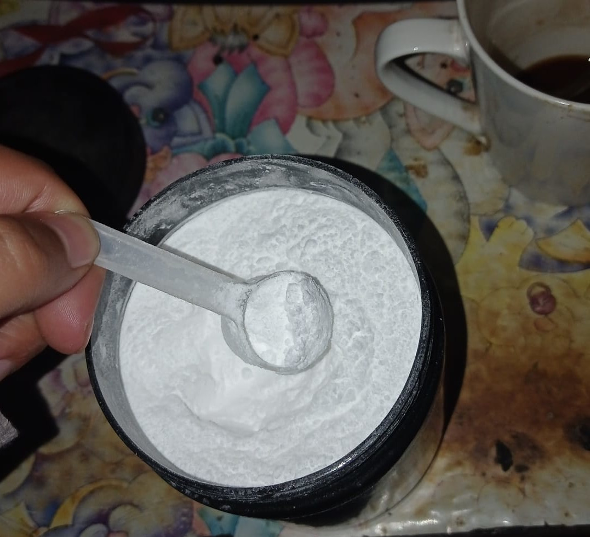

Como preparar agua con Creatina

This recipe will make you look like Arnold 100% garantized :O
Following this recipe and going gym all days, without skipping leg day,
you will look like Arnold in 3 days
Ingredients
Steps to become arnols
- Grab the creatine and add a scoop into the water

- Go to gym and drink it while you workout your legs
- Buy a bible and start praying